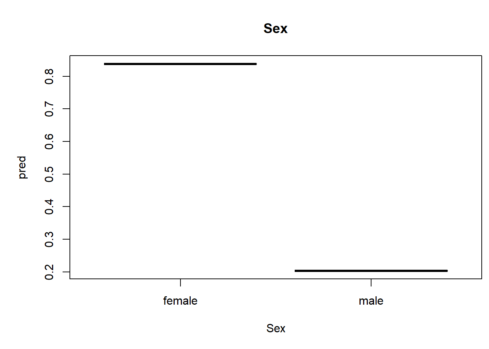
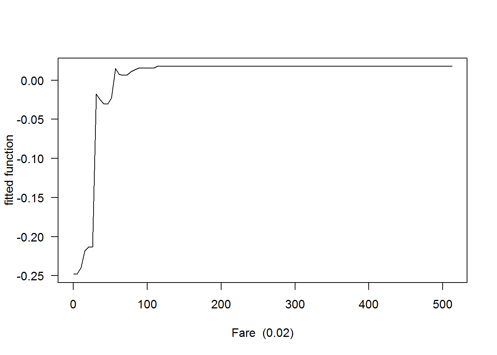
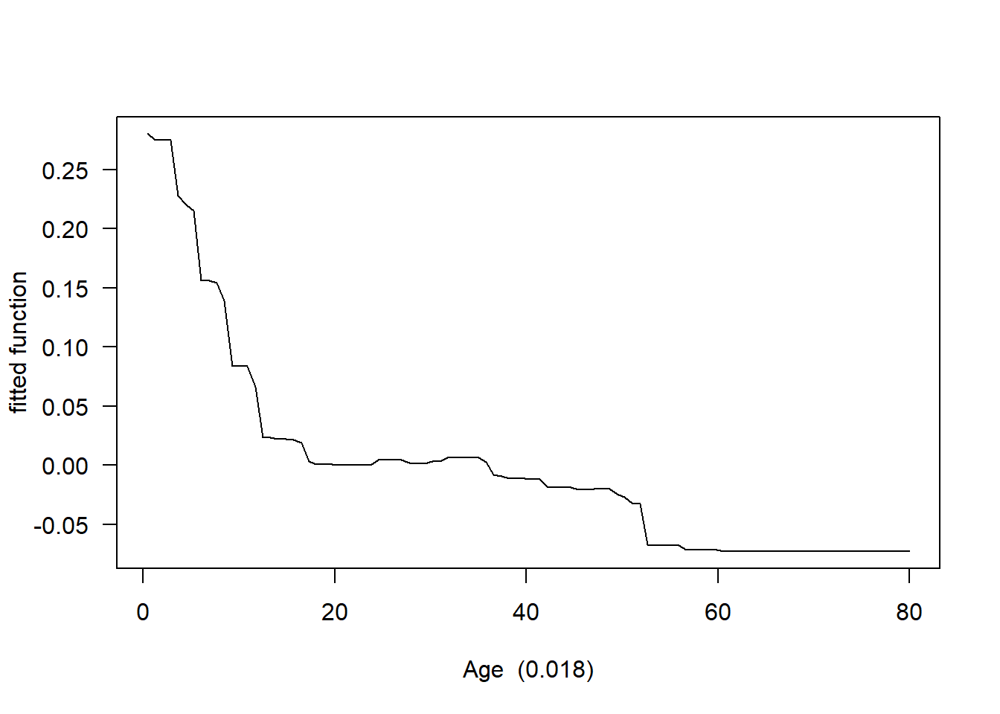
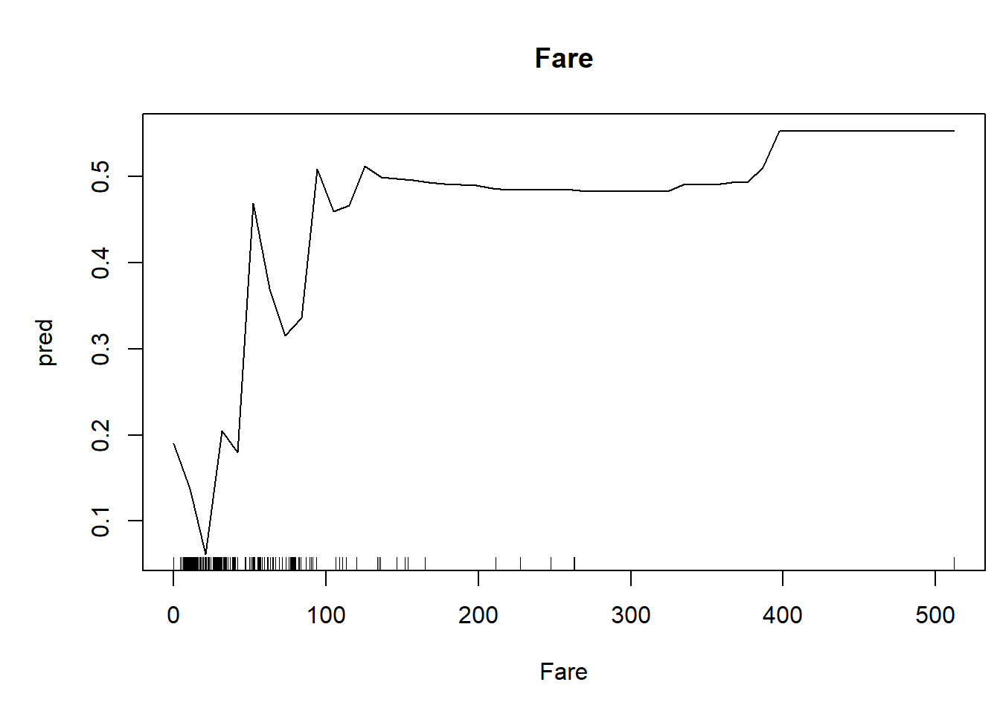
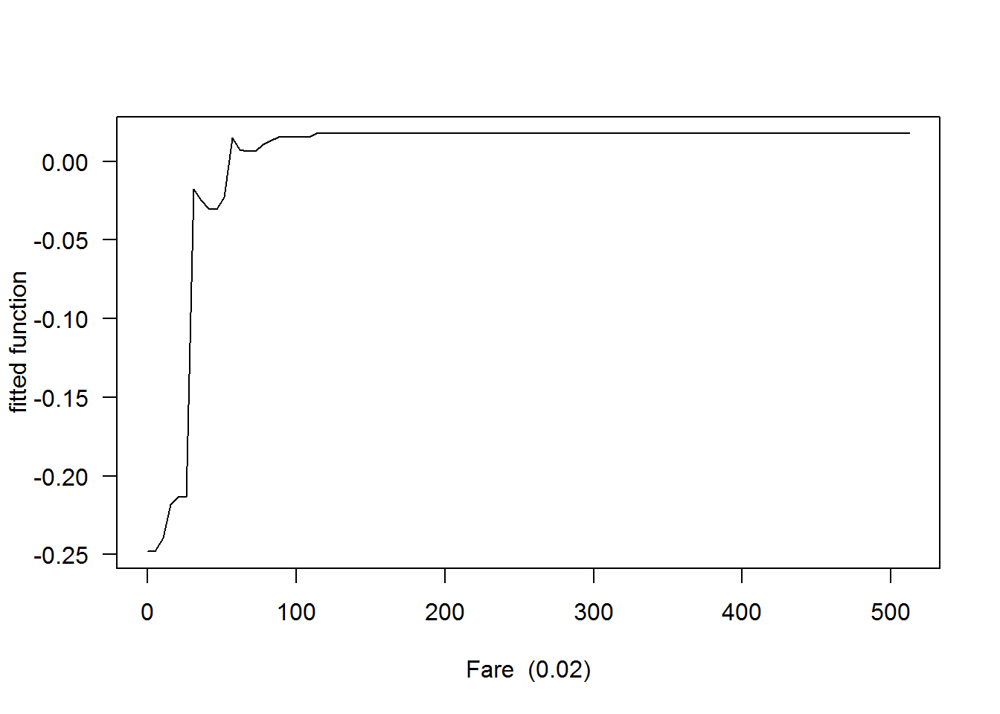
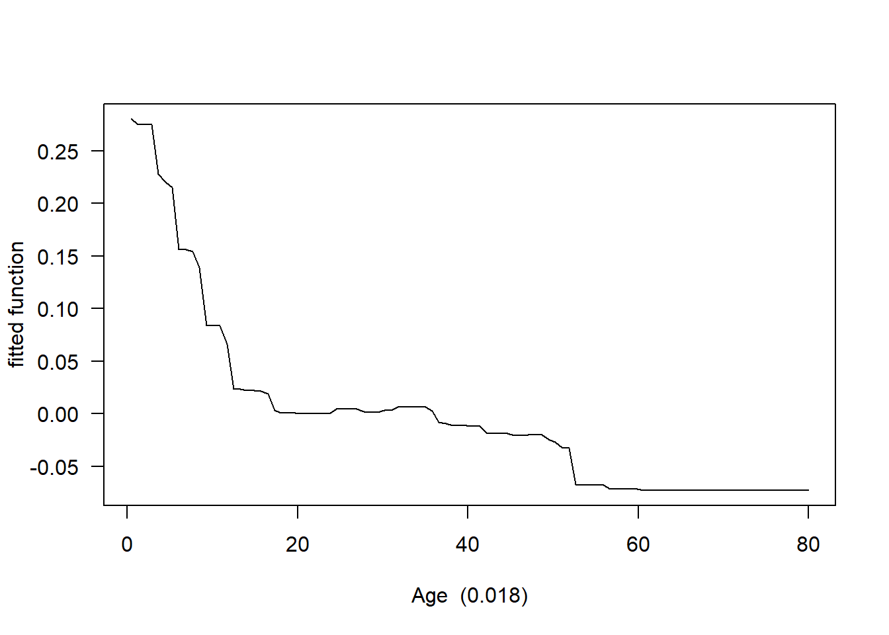
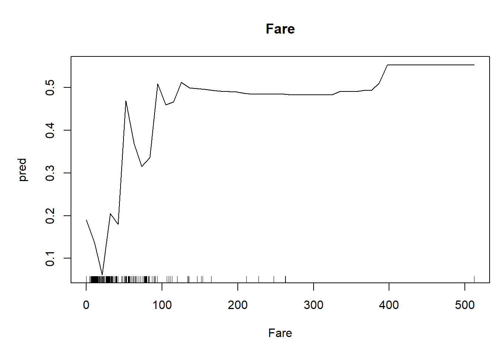

Machine Learning: Random Forest
Kevin Shoemaker
Fall 2021
For those wishing to follow along with the R-based demo in class, click here for the companion R script for this lecture.
Machine learning
Machine learning may seem similar to statistics, but there are some important differences.
In statistics, we attempt to draw inferences about a (statistical) population from a sample. In essence, we are using sample data we collected to gain understanding about our study system. We may also use our new understanding to make predictions and forecasts. In statistics, prediction is often secondary to building understanding of our system.
In machine learning, we attempt to use available data to detect generalizable predictive patterns. In machine learning we often don’t care as much about building our understanding of the system, we simply want to be able to make better predictions. Machine learning is generally not going to allow us to make inference about population parameters of interest using confidence bounds, p-values etc. However, the predictions we make using machine learning can be more accurate than the predictions we make using statistical models.
Machine-learning tends to impose fewer assumptions on the data than statistical models. For example, we don’t need to assume normal residuals, or even linearity!
Decision trees
A decision tree is essentially a bunch of branching rules for determining an expected response from a set of predictor variables (features).
First, we use one of the features to divide our data such that the response variables are as similar as possible within the two resulting branches of the tree. For each of the resulting branches, we repeat this procedure, dividing the resulting branches again and again (recursively) until some endpoint is reaches (e.g., 3 or fewer observations remaining in the branch). Each decision point in the tree are called nodes. The final branches in the tree are called leaves.
Here is an example:

Random forest
Random forest is one of the older and still most popular machine learning methods. It is relatively easy to understand, and tends to make very good predictions. A random forest consists of a large set of decision trees!
The basic algorithm is as follows:
For each of a large number of iterations (e.g., 500) do the following:
- Draw a small bootstrap sample from the original dataset- generally much smaller than the original dataset.
- Using this bootstrap sample, build a decision tree. At each node of the decision tree, select splitting rules from a small subset of the available predictor variables (features).
Once you have the full set of trees, you make predictions by using a weighted average or majority-voting rule based on all the component trees in the forest:

In random forest, each tree is meant to be somewhat independent from one another- in machine learning, each tree is a “weak learner”. All of the trees (the ‘committee’) will generally be a much better and more robust (generalizable) predictor than any single tree in the forest. The use of bootstrapping and random sampling of features within the random forest algorithm ensures that each tree is a weak predictor and is relatively independent from other trees in the forest. However, the collection of trees becomes a better predictor than any single tree could be!
Random forest is not only a good way of making predictions, it also helps us:
- Identify which features are most important for prediction: By keeping track of which features tend to yield the biggest improvements in prediction accuracy across all trees in the forest (generally we keep track of the ability to predict observations that were not used for fitting each tree- these are called ‘out of bag’ observations), we can produce robust indicators of variable importance.
- Identify non-linear relationships. By plotting out our predicted response across a range of each predictor variable, we can see if any non-linear patterns emerge!
- Identify important interactions. By comparing how predicted responses for one feature change across a range of another feature, we can assess the degree to which features interact to determine the expected response.
Example: the titanic disaster
Let’s evaluate which factors were related to surviving the titanic disaster!
You can load the titanic data example here. Alternatively you can use the ‘titanic’ package in R!
##########
# titanic disaster example (load data)
titanic <- read.csv("titanic.csv",header=T)
head(titanic)## PassengerId Survived Pclass
## 1 1 0 3
## 2 2 1 1
## 3 3 1 3
## 4 4 1 1
## 5 5 0 3
## 6 6 0 3
## Name Sex Age SibSp Parch
## 1 Braund, Mr. Owen Harris male 22 1 0
## 2 Cumings, Mrs. John Bradley (Florence Briggs Thayer) female 38 1 0
## 3 Heikkinen, Miss. Laina female 26 0 0
## 4 Futrelle, Mrs. Jacques Heath (Lily May Peel) female 35 1 0
## 5 Allen, Mr. William Henry male 35 0 0
## 6 Moran, Mr. James male NA 0 0
## Ticket Fare Cabin Embarked
## 1 A/5 21171 7.2500 S
## 2 PC 17599 71.2833 C85 C
## 3 STON/O2. 3101282 7.9250 S
## 4 113803 53.1000 C123 S
## 5 373450 8.0500 S
## 6 330877 8.4583 Qlibrary(titanic) # alternative!## Warning: package 'titanic' was built under R version 4.1.1titanic <- titanic_trainLet’s first load a package that implements a fast/efficient version of random forest
While we’re at it, let’s load another package for running a single decision tree
library(ranger) # fast implementation of random forest
library(party) # good package for running decision tree analysis (and random forest- just slower)When using categorical variables, we should make sure they are encoded as factors, not as numeric. Use class(data$Resp) to check the encoding, and use as.factor(data$Resp) to encode your vector as a factor.
titanic$Survived <- as.factor(titanic$Survived) # code response variable as a factor variable (categorical)
titanic$Sex <- as.factor(titanic$Sex)Now let’s define the predictors and response:
predictorNames <- c( "Sex", # nice readable names
"Age",
"Sibs/spouses",
"Parents/children",
"Fare"
)
pred.names=c( "Sex",
"Age",
"SibSp",
"Parch",
"Fare"
)
# cbind(pred.names,predictorNames)
response="Survived"
formula1 <- as.formula(paste(response,"~",paste(pred.names,collapse="+"))) # formula for the RF modelRun a decision tree
This is also known as a CART analysis (classification and regression tree) - a single tree, not a forest!
TerrMamm.tr <- ctree(formula=formula1, data=titanic, controls = ctree_control(mincriterion = 0.85,maxdepth = 3))
plot(TerrMamm.tr)But remember that a single tree is not very robust- these are very likely to over-fit to the data! Random forest gets around this issue and is much more robust than CART analysis!
Like most machine learning algorithms, we can “tune” the algorithm in several different ways. If this were a “real” analysis, I would try several alternative parameter tunings.
####### Run a random forest model!
titanic2 <- na.omit(titanic) # remove missing data (ranger does not handle missing data- 'party' implementation does...)
thismod <- ranger(formula1, data=titanic2, probability=T,importance = 'permutation' )Variable importance
One thing we can easily get from a RF analysis is an index of the relative importance of each predictor variable
# get the importance values
varimp <- importance(thismod)
lengthndx <- length(varimp)
#par(mai=c(0.95,3.1,0.6,0.4))
par(mai=c(1.2,3.4,0.6,0.9))
col <- rainbow(lengthndx, start = 3/6, end = 4/6)
barplot(height=varimp[order(varimp,decreasing = FALSE)],
horiz=T,las=1,main="Order of Importance of Predictor Variables",
xlab="Index of overall importance",col=col,
names.arg=predictorNames[match(names(varimp),pred.names)][order(varimp,decreasing = FALSE)])
Univariate predictions
We can also generate univariate predictive plots, also known as “partial dependence plots”. Note the use of the ‘predict’ function!
##### Make univariate plots of the relationships- plot one relationship at a time
par(mai=c(1,1,.8,.1))
p=1
for(p in 1:length(pred.names)){
thisvar <- pred.names[p]
if(is.factor(titanic2[[thisvar]])){
nd <- data.frame(x=as.factor(levels(titanic2[[thisvar]])))
}else{
nd <- data.frame(x=seq(min(titanic2[[thisvar]]),max(titanic2[[thisvar]]),length=50))
}
names(nd) <- thisvar
othervars <- setdiff(pred.names,thisvar)
temp <- sapply(othervars,function(t){ if(is.factor(titanic2[[t]])){ nd[[t]] <<- titanic2[[t]][1]}else{ nd[[t]] <<- mean(titanic2[[t]]) }} )
#nd
pred = predict(thismod,data=nd,type="response")$predictions[,2]
plot(pred~nd[,1],type="l",xlab=thisvar,main=predictorNames[p])
if(!is.factor(nd[,1])) rug(jitter(titanic2[[thisvar]]))
} 

Interactions
Finally, we can find and plot the most important interactions!
In the following code block we assess the strength of all possible two-way interactions, by measuring the difference between the RF predictions across each 2-D parameter space and a fully additive model. Don’t worry if this doesn’t make sense- see me another time if you’d like me to explain the code in more detail!
allcomb <- as.data.frame(t(combn(pred.names,2)))
names(allcomb) <- c("var1","var2")
allcomb$int1 <- NA
allcomb$int2 <- NA
p=1
for(p in 1:nrow(allcomb)){
var1 = allcomb$var1[p]
var2 = allcomb$var2[p]
if(!is.factor(titanic2[[var1]])){
all1= seq(min(titanic2[[var1]]),max(titanic2[[var1]]),length=10)
}else{
all1=as.factor(levels(titanic2[[var1]]))
}
if(!is.factor(titanic2[[var2]])){
all2 = seq(min(titanic2[[var2]]),max(titanic2[[var2]]),length=10)
}else{
all2=as.factor(levels(titanic2[[var2]]))
}
nd <- expand.grid(all1,all2)
names(nd) <- c(var1,var2)
othervars <- setdiff(pred.names,c(var1,var2))
temp <- sapply(othervars,function(t){ if(is.factor(titanic2[[t]])){ nd[[t]] <<- titanic2[[t]][1]}else{ nd[[t]] <<- mean(titanic2[[t]]) }} )
pred = predict(thismod,data=nd,type="response")$predictions[,2]
additive_model <- lm(pred~nd[[var1]]+nd[[var2]])
pred_add = predict(additive_model)
allcomb$int1[p] <- sqrt(mean((pred-pred_add)^2))
maximp <- mean(varimp[c(var1,var2)])
allcomb$int2[p] <- allcomb$int1[p]/maximp
}
allcomb <- allcomb[order(allcomb$int1,decreasing = T),]
allcomb## var1 var2 int1 int2
## 6 Age Parch 0.17363907 6.4882833
## 4 Sex Fare 0.12447808 1.3198137
## 5 Age SibSp 0.10870998 3.4526082
## 1 Sex Age 0.10368873 1.2532406
## 7 Age Fare 0.09920428 1.9441792
## 3 Sex Parch 0.08853880 1.2639276
## 10 Parch Fare 0.06685638 1.7437607
## 9 SibSp Fare 0.05987605 1.3903732
## 2 Sex SibSp 0.04017123 0.5372287
## 8 SibSp Parch 0.03402591 1.8098532Next, we visualize our top interactions!
### visualize interactions
ints.torun <- 1:2
int=2
for(int in 1:length(ints.torun)){
thisint <- ints.torun[int]
var1 = allcomb$var1[thisint]
var2 = allcomb$var2[thisint]
if(!is.factor(titanic2[[var1]])){
all1= seq(min(titanic2[[var1]]),max(titanic2[[var1]]),length=10)
}else{
all1=as.factor(levels(titanic2[[var1]]))
}
if(!is.factor(titanic2[[var2]])){
all2 = seq(min(titanic2[[var2]]),max(titanic2[[var2]]),length=10)
}else{
all2=as.factor(levels(titanic2[[var2]]))
}
nd <- expand.grid(all1,all2)
names(nd) <- c(var1,var2)
othervars <- setdiff(pred.names,c(var1,var2))
temp <- sapply(othervars,function(t)if(is.factor(titanic2[[t]])){ nd[[t]] <<- titanic2[[t]][1]}else{ nd[[t]] <<- mean(titanic2[[t]]) } )
pred = predict(thismod,data=nd,type="response")$predictions[,2]
predmat = matrix(pred,nrow=length(all1),ncol=length(all2))
if(!is.factor(titanic2[[var1]])){
persp(all1,all2,predmat,theta=25,phi=25,xlab=var1,ylab=var2,zlab="prob surv")
}else{
plot(predmat[1,]~all2,xlab=var2,ylab="prob surv",type="l",ylim=c(0,1),col="green",lwd=2)
lines(all2,predmat[2,],col="blue",lwd=2)
legend("bottomright",bty="n",lty=c(1,1),col=c("green","blue"),lwd=c(2,2),legend=c("Female","Male"))
}
}

Model performance
Finally, let’s bring this home by looking at model performance!
###################################
#################### CROSS VALIDATION CODE
n.folds = 10 # set the number of "folds"
foldVector = rep(c(1:n.folds),times=floor(length(titanic2$Survived)/9))[1:length(titanic2$Survived)]Then, we do the cross validation, looping through each fold of the data, leaving out each fold in turn for model training.
counter = 1
CV_df <- data.frame(
CVprediction = numeric(nrow(titanic2)), # make a data frame for storage
realprediction = 0,
realdata = 0
)
i=1
for(i in 1:n.folds){
fit_ndx <- which(foldVector!=i)
validate_ndx <- which(foldVector==i)
model <- ranger(formula1, data = titanic2[fit_ndx,],probability=T,importance = 'permutation')
CV_df$CVprediction[validate_ndx] <- predict(model,data=titanic2[validate_ndx,],type="response")$predictions[,2]
CV_df$realprediction[validate_ndx] <- predict(thismod,data=titanic2[validate_ndx,],type="response")$predictions[,2]
CV_df$realdata[validate_ndx] <- titanic2$Survived[validate_ndx]
}
fact=TRUE
if(fact){
CV_df$realdata=CV_df$realdata-1
}
CV_RMSE = sqrt(mean((CV_df$realdata - CV_df$CVprediction)^2)) # root mean squared error for holdout samples in 10-fold cross-validation
real_RMSE = sqrt(mean((CV_df$realdata - CV_df$realprediction)^2)) # root mean squared error for residuals from final model
# print RMSE statistics
cat("The RMSE for the model under cross-validation is: ", CV_RMSE, "\n")## The RMSE for the model under cross-validation is: 0.3705312cat("The RMSE for the model using all data for training is: ", real_RMSE, "\n")## The RMSE for the model using all data for training is: 0.2841799Let’s plot out the ROC curves!
library(ROCR)
library(rms)
par(mfrow=c(2,1))
pred <- prediction(CV_df$CVprediction,CV_df$realdata) # for holdout samples in cross-validation
perf <- performance(pred,"tpr","fpr")
auc <- performance(pred,"auc")
plot(perf, main="Cross-validation")
text(.9,.1,paste("AUC = ",round(auc@y.values[[1]],2),sep=""))
pred <- prediction(CV_df$realprediction,CV_df$realdata) # for final model
perf <- performance(pred,"tpr","fpr")
auc <- performance(pred,"auc")
plot(perf, main="All data")
text(.9,.1,paste("AUC = ",round(auc@y.values[[1]],2),sep=""))
Finally, we can use the same pseudo-R-squared metric we learned above as an alternative metric of performance
CV_df$CVprediction[which(CV_df$CVprediction==1)] <- 0.9999 # ensure that all predictions are not exactly 0 or 1
CV_df$CVprediction[which(CV_df$CVprediction==0)] <- 0.0001
CV_df$realprediction[which(CV_df$realprediction==1)] <- 0.9999
CV_df$realprediction[which(CV_df$realprediction==0)] <- 0.0001
fit_deviance_CV <- mean(-2*(dbinom(CV_df$realdata,1,CV_df$CVprediction,log=T)-dbinom(CV_df$realdata,1,CV_df$realdata,log=T)))
fit_deviance_real <- mean(-2*(dbinom(CV_df$realdata,1,CV_df$realprediction,log=T)-dbinom(CV_df$realdata,1,CV_df$realdata,log=T)))
null_deviance <- mean(-2*(dbinom(CV_df$realdata,1,mean(CV_df$realdata),log=T)-dbinom(CV_df$realdata,1,CV_df$realdata,log=T)))
deviance_explained_CV <- (null_deviance-fit_deviance_CV)/null_deviance # based on holdout samples
deviance_explained_real <- (null_deviance-fit_deviance_real)/null_deviance # based on full model...
# print RMSE statistics
cat("The McFadden R2 for the model under cross-validation is: ", deviance_explained_CV, "\n")## The McFadden R2 for the model under cross-validation is: 0.3530064cat("The McFadden R2 for the model using all data for training is: ", deviance_explained_real, "\n")## The McFadden R2 for the model using all data for training is: 0.5827352